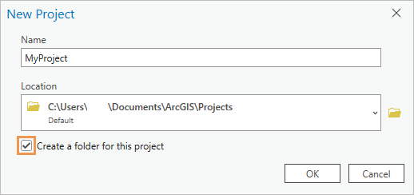

Set general options
General options include settings for starting ArcGIS Pro, creating projects, accessing the help system, setting the application theme, participating in the Esri User Experience Improvement program, and recovering projects.
To set General options, follow these steps:
- Open the ArcGIS Pro settings page in one of the following ways:
- From an open project, click the Project tab on the ribbon.
- From the start page, click the Settings tab
 .
.
- In the list of side tabs, click Options.
- On the Options dialog box menu, under Application, click General.
Start ArcGIS Pro
Choose an option for how to start ArcGIS Pro:
- Show the start page—ArcGIS Pro opens to the application start page. This is the default option.
- Without a project template—ArcGIS Pro bypasses the start page and opens an unsaved, untitled project that contains no maps or scenes.
- With a default project—ArcGIS Pro bypasses the start page and opens a specified project. Click Browse and browse to a project, or enter a path in the Project text box.
 Note:
Note:You cannot browse to a portal project or enter its URL as the default project path. However, you can use your local copy of a portal project as the default project. This may be an appropriate setting if you are the only user of the portal project.
Create projects
This section describes options for creating projects.
Note:Software administrators can provide default values for new project settings and may prevent you from changing them.
On a local or network computer
This section describes options for creating projects on local or network computers.
Project location
Choose an option for where to save projects:
- New projects are saved in the default location—New projects are saved in your user profile at Documents\ArcGIS\Projects. This is the default option.
- New projects are saved in a custom location—New projects are saved to a specified location. Enter a path in the Location text box or click Browse and browse to a folder. Optionally, browse to a location, click the New Item drop-down arrow, and create a folder .
Both options allow you to browse to a different location on the New Project dialog box when you create a project.
Create a folder for the project
The Create a folder for the project check box specifies a default setting on the New Project dialog box. It does not enforce creating a folder for the project.
Choose whether to make folder creation a default setting:
- Checked—A folder is created for new projects unless the setting is changed on the New Project dialog box. This is the default option.
- Not checked—A folder is not created for new projects unless the setting is changed on the New Project dialog box.
If a folder is created for the project, it has the same name as the project, contains the project file (.aprx) and other default items, and is stored in the project location. If a folder is not created, the project file and default items are stored in the project location but not inside a new folder.
 |
For a new local project, you can choose whether to create a project folder. The options setting specifies whether the Create a folder for this project check box is checked by default. |
Default Geodatabase
Choose an option to set the default geodatabase for new projects:
- New default geodatabase for each project—For each new project, a file geodatabase (.gdb) is created as the default geodatabase. This is the default option.
- Same default geodatabase for all projects—Each new project uses the same default geodatabase. Enter a path in the Geodatabase text box or click Browse and browse to a geodatabase. Optionally, browse to a location, click the New Item drop-down arrow, and create a geodatabase or database connection .
When a default geodatabase is created for each project, the geodatabase is a file geodatabase. When the same default geodatabase is used for all projects, the geodatabase can be a file geodatabase (.gdb), mobile geodatabase (.geodatabase), or enterprise geodatabase (.sde). You can change the default geodatabase for a project after the project is created.
Default Toolbox
Choose an option to set the default toolbox for new projects:
- New default toolbox for each project—For each new project, a toolbox (.atbx) is created as the default toolbox. This is the default option.
- Same default toolbox for all projects—Each new project uses the same default toolbox. Enter a path in the Toolbox text box or click Browse and browse to a toolbox. Optionally, browse to a location, click the New Item drop-down arrow, and create a toolbox (.atbx).
When the same default toolbox is used, you can choose a toolbox (.atbx), a Python toolbox (.pyt), or a legacy toolbox (.tbx). A toolbox stored in a geodatabase cannot be the default toolbox. You can change the default toolbox for a project after the project is created.
On an ArcGIS Enterprise portal
This section describes options for creating projects on an ArcGIS Enterprise portal. Portal projects, unlike local projects, do not, by default, create a geodatabase and toolbox for the project.
Paths set here become the defaults for all new portal projects. No paths are preset other than the project download location. Optionally, if the paths on this dialog box are empty, you can populate them with the paths you set in a new portal project.
Download location
Portal projects are downloaded and cached in the location set in the Download location text box.
Set a location:
- Accept the default download location of Documents\ArcGIS\OnlineProjects in your user profile.
- Alternatively, click Browse and browse to a location or enter a path in the Download location text box. On the browse dialog box, you can also click the New Item drop-down arrow and create a folder .
Home folder
The portal project home folder is the default location for output files that are not saved to a geodatabase.
- Enter a path in the Home folder text box or click Browse and browse to a folder.
- Optionally, browse to a location, click the New Item drop-down arrow, and create a folder .
Default Geodatabase
The portal project default geodatabase is the default location for geoprocessing output files.
- Enter a path in the Geodatabase text box or click Browse and browse to a geodatabase.
- Optionally, browse to a location, click the New Item drop-down arrow, and create a geodatabase or database connection .
Default Toolbox
The portal project default toolbox is the default location for geoprocessing models and scripts. You must use a toolbox (.atbx). You cannot use a Python toolbox (.pyt) or a legacy toolbox (.tbx) as the default toolbox in a portal project. In addition, a toolbox stored in a geodatabase cannot be the default toolbox.
- Enter a path in the Toolbox text box or click Browse and browse to a toolbox.
- Optionally, browse to a location, click the New Item drop-down arrow, and create a toolbox (.atbx).
Help source
ArcGIS Pro has an online help system and an offline (installed) help system. For the most part, the two systems have the same content; however, the online help may be more current. For more information, see Access the help.
Choose a help source option:
- Online help from the Internet—The ArcGIS Pro help system opens in your default web browser. This is the default option.
- Offline help from your computer (requires local help installation)—The ArcGIS Pro help system opens in an application on your computer. This option is available only if the offline help system is installed. You can download the ArcGIS Pro help system setup file from My Esri.
 Tip:
Tip:If you work in the field or in a disconnected environment, download and install the offline help system.
Application theme
ArcGIS Pro has two color themes. If you switch themes, you must restart ArcGIS Pro for the change to take effect.
Choose an application theme:
- Light—The application background color is light gray. This is the default option.
- Dark—The application background color is black.
Esri User Experience Improvement program
The Esri User Experience Improvement (EUEI) program helps Esri improve the interface and usability of ArcGIS Pro.
Would you like to anonymously participate in the design of future versions of ArcGIS?
Choose whether to participate in the EUEI program:
- Yes, I would like to participate in the Esri User Experience Improvement program (Recommended)—This is the default option.
- No, I don't want to participate in the Esri User Experience Improvement program
Participation doesn't require action on your part other than consent. You can change your decision at any time.
Update your region
EUEI data is uploaded to a cloud storage region of your choice. The region setting is also used to store software error reports that you submit, whether or not you participate in the EUEI program.
Accept the North America (default) setting or click the Update your region drop-down arrow and choose a different region.
Project recovery
The Create a backup when the project has unsaved changes check box specifies whether backup copies of your project are made as you work. A backup copy allows you to recover your project if ArcGIS Pro shuts down unexpectedly.
Note:Software administrators can provide default values for project recovery settings and may prevent you from changing them.
Choose whether to create backup copies of your project:
- Checked—A backup copy is made at a specified interval. This is the default option.
- Not checked—A backup copy is not made.
The value in the Save a backup after this time interval has elapsed text box specifies how often, in minutes, a backup copy is made. You can enter an integer from 1 to 999.